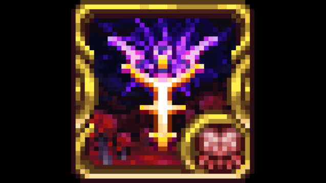

ОбязателенCalamity Mod
⭐ 4.9📥 9,226,400
Calamity Mod — это мод с обширным количеством контента, дарующий новый и освежающий опыт игры в Terraria! Данный мод добавляет множество новых боссов и НИПов, биомы для исследования, уникальные режимы сложности и больше двух тысяч предметов! Calamity Mod также значительно расширяет финальные этапы Terraria, создавая для игроков особый, напряжённый опыт. Основной мод сборки. Добавляет тонны контента: боссов, биомы, оружие.